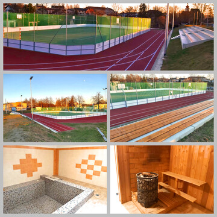

Sport

Jsme přesvědčeni, že město má podporovat sportovní aktivity svých občanů, především dětí a mládeže. Sportovní aktivity podporují nejen fyzickou zdatnost, ale vytváří také sociální kontakty. Nabízejí smysluplnou zábavu a trávení volného času, aktivní odpočinek i seberealizaci. Je to i důležitá součást předcházení sociopatologickým jevům. S covidem významně klesl zájem především dětí a mládeže o sportovní vyžití. Je nutné je přivést zpět ke sportu i díky zatraktivnějí nabídky na sportovní vyžití.
Podařilo se
-
vybudovat multifunkční hřiště na bývalém zimním stadionu.
-
průběžně investovat do stavebních úprav a vybavení ve sportovní hale: nové nářadí, bezbariérový vstup, kompletní rekonstrukce sauny.
-
finančně přispět k renovaci fotbalového trávníku včetně umělé závlahy.
-
finančně přispět na novou tribunu.
-
finančně přispět ke zkvalitnění tréninkového hřiště.
Chceme
-
nadále podporovat Tělovýchovnou jednotu Spartak Trhové Sviny a další sportovní skupiny – Sportovní klub Rejta, Veselá atletika, atd.
-
podporovat organizátory sportovních akcí ve městě i v regionu.
-
podporovat sportovní aktivity i v místních částech.
-
pokračovat v modernizace vybavení stávající sportovní haly.
-
připravit návrh revitalizace celého sportovního areálu včetně sportovní haly.
-
více prezentovat sportovní akce – organizátorům sportovních akcí bude nabídnuta možnost prezentace pomocí aplikace Mobilní rozhlas i webových stránek města.